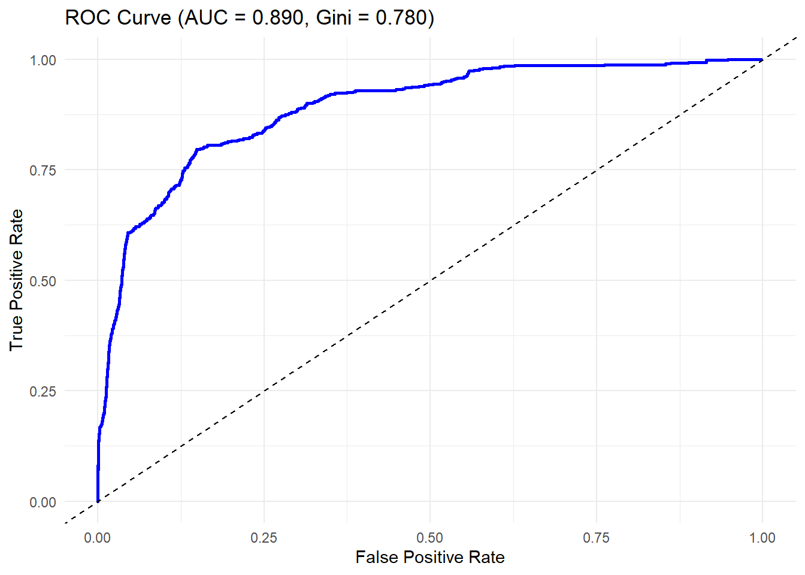

flowchart LR
subgraph Corporate
A1[Estimate PD] --> D1[Risk-weight function]
B1[Estimate LGD] --> D1
C1[Estimate EAD] --> D1
D1 --> E1[RWA Corporate]
style A1 fill:#ddeaf1,stroke:#333,stroke-width:2px
style B1 fill:#ddeaf1,stroke:#333,stroke-width:2px
style C1 fill:#ddeaf1,stroke:#333,stroke-width:2px
end
subgraph Sovereign
A2[...] -->
E2[RWA Sovereign]
end
subgraph Financial Institution
A3[...] --> E3[RWA Financial]
end
subgraph Retail
A4[...] --> E4[RWA Retail]
end
E1 --> F[Aggregation]
E2 --> F
E3 --> F
E4 --> F
F --> G[Total Credit Risk RWA]
AFIN8003 Week 7 Workshop - Credit Risk Modelling in Practice (II)
AFIN8003
2026S1
This article is a part of my teaching notes for AFIN8003 Banking and Financial Intermediation at the Macquarie Business School. It is intended for educational purposes and aims to provide students with an understanding of the IRB approach.
1 Background
Under Basel III capital adequacy regulations, banks are required to maintain appropriate levels of capital ratios, which are essentially computed as
\[ \text{Capital Ratio} = \frac{\text{Capital}}{\text{Risk-Weighted Assets (RWA)}}, \tag{1}\]
where \(\text{Capital}\) is the amount of capital (e.g., CET1, Tier 1, and Total Capital), and \(\text{RWA}\) is the total risk-weighted assets, calculated as the sum of RWA for different risk types, including credit risk, market risk, and operational risk.
Of the different risk types, credit risk contributes the most to RWA, as shown in the Table 1 below. Therefore, accurate measurement and management of credit risk are crucial for banks to maintain adequate capital levels. Even outside of regulatory requirements, effective credit risk management can help banks optimize their capital allocation and improve profitability. This is the “essence of banking” (Gorton and He 2008).
| CBA | Westpac | NAB | ANZ | Macquarie | |
|---|---|---|---|---|---|
| RWA for credit risk | 370,444 | 351,724 | 350,891 | 361,185 | 98,250 |
| RWA for market risk | 52,132 | 37,510 | 26,953 | 30,875 | 14,277 |
| RWA for operational risk | 44,975 | 48,196 | 36,102 | 49,650 | 17,512 |
| Other RWA | 0 | 0 | 0 | 4,872 | 0 |
| Total RWA | 467,551 | 437,430 | 413,946 | 446,582 | 130,039 |
To compute the RWA for credit risk, smaller banks use the Standardised Approach, while larger banks can use the Internal Ratings-Based (IRB) approach,1 which allows them to use their own estimates of key risk parameters to calculate capital requirements.
While the Standardised Approach is simpler and more prescriptive, the IRB approach can be somewhat more opaque. The purpose of this article is to shed light on the IRB approach and provide an educational overview of its implementation.
This article is written in the Australian context, using the Basel III framework as implemented by APRA via Prudential Standard APS 113: Capital Adequacy: Internal Ratings-Based Approach to Credit Risk. However, the concepts and formulas discussed here are broadly applicable to other jurisdictions that have adopted the Basel III framework.
2 Overview of the IRB Approach
Using the IRB approach, banks need to classify its banking book exposures to one of the following asset classes:
- corporate;
- sovereign;
- financial institution; and
- retail.
Then for each asset class, banks must estimate the key risk parameters to calculate RWA. The total RWA (for credit risk) is the sum of the RWA for each asset class, subject to certain adjustments.2
A simplified overview of the IRB approach is illustrated below.
2.1 Key components of the IRB approach
Central to the implementation of the IRB approach is the accurate estimation of three key risk parameters:
- Probability of Default (PD): The likelihood that a borrower will default on their obligations, expressed as a percentage.
- Loss Given Default (LGD): The economic loss upon the default of a borrower, expressed as a percentage.
- Exposure at Default (EAD): The gross exposure under a facility (i.e., the amount that is legally owed to the bank) upon the default of a borrower, expressed in Australian dollars.
Once these parameters are estimated, banks can use them to calculate the RWA for each asset class using the prescribed risk-weight functions as set out in APS 113.
2.2 IRB risk-weight functions
The IRB approach specifies different risk-weight functions for each asset class, which are used to calculate the RWA based on the estimated risk parameters. Specifically, Attachment A of APS 113 sets out the risk-weight functions for different exposures, including:
- Risk-weighted assets for corporate, sovereign and financial institution exposures
- Risk-weighted assets for specialised lending exposures subject to the supervisory slotting approach
- Risk-weighted assets for retail exposure
- Risk-weighted assets for lease exposures
- Risk-weighted assets for defaulted exposures
Without loss of generality, this article focuses on the risk-weight function for non-defaulted corporate, sovereign and financial institution exposures.
For example, as at the time of writing, the risk-weight function for non-defaulted corporate, sovereign and financial institution exposures is:
\[ \begin{align} \text{Correlation} (R) &= AVCM \times \left(0.12 \times \frac{1-\exp(-50 \times PD)}{1-\exp(-50)} + 0.24 \times \left[1-\frac{1-\exp(-50 \times PD)}{1-\exp(-50)} \right]\right) \\ \text{Maturity adjustment} (b) &= \left[0.11852 - 0.05478 \ln(PD)\right]^2 \\ \text{Capital requirement} (K) &= \left[LGD \times N\left(\frac{G(PD) + \sqrt{R} \times G(0.999)}{\sqrt{1-R}}\right) - PD \times LGD \right] \times \left(\frac{1+(M-2.5)\times b}{1 - 1.5\times b}\right) \\ RWA &= K \times 12.5 \times EAD \end{align} \tag{2}\]
where \(N(\cdot)\) is the cumulative distribution function (CDF) of the standard normal distribution, and \(G(\cdot)\) is the inverse CDF of the standard normal distribution, i.e., \(G(x) = N^{-1}(x)\). Further, if the calculated \(K\) is negative, banks must apply a zero capital requirement for that exposure.
The asset value correlation multiplier (AVCM) is normally set to 1. However, for exposures to large financial institutions (those with total assets of $125 billion or more) or to unregulated financial institutions, the AVCM is increased to 1.25.3
To have an intuitive understanding of how these parameters interact, play around with the following calculator.
TipWhy IRB Capital (K) Falls at Very High PDs
In the IRB framework, capital (K) is designed to cover unexpected losses — the part of credit loss that arises only in bad-tail scenarios.
- When PD is low: Defaults are rare, so if one happens it is a big surprise. The unexpected loss is large, and capital requirements rise as PD increases.
- When PD is high (say above 30%): Default is almost certain. At that point, most of the loss is expected rather than unexpected.
Expected loss is not covered by capital. Instead, it is addressed through accounting provisions. Simply put, when a loan’s default risk (PD) is sufficiently high, the bank needs to increase loan loss provisions to cover these expected losses. This is governed by IFRS 9.
Because those losses are already anticipated and provisioned, the “unexpected” portion becomes smaller. This is why IRB capital can actually decline for very high PD exposures — capital is only needed for the residual uncertainty, not for losses that everyone already expects.
3 Credit Scoring - Estimating PD
This article focuses on the estimation of Probability of Default (PD), taking as given Loss Given Default (LGD) and Exposure at Default (EAD).
Under the IRB approach, banks use their own internal credit scoring and rating systems to estimate risk parameters like Probability of Default (PD).
Importantly, Basel III and its Australian implementation (APS 113) requires the PD estimates to be calibrated to a long-run average of one-year default rates (one-year PD) for borrowers in each borrower grade and for exposures in each pool.
3.1 Overview of credit scoring model development
The flowchart below illustrates the key steps to develop a PD model in the credit risk modelling process. We will then break down each step in detail.
flowchart LR
%% A[Start] --> B[Sample selection]
B[Sample selection]
B --> C[Variable screening]
C --> D["Model estimation
& evaluation"]
D --> E[Calibration]
E --> F["Transition matrix
analysis"]
F --> G{Ratings stable?}
G -- No --> E
G -- Yes --> H["RWA impact
analysis"]
H --> I{Impact acceptable?}
I -- Yes --> J[Approval & deployment]
I -- No --> E
%% J --> K[Ongoing monitoring]
To illustrate the process, I will use a simulated dataset credit_data to demonstrate the steps involved in credit risk modeling. The dataset contains 100,000 loans over a period of 5 years.
3.2 Sample selection
We begin by building a representative sample from the accumulated data of loans and borrowers. This includes both performing and non-performing (defaulted) loans. Typically, default is defined by 90+ days past due (DPD), which indicates a payment that is at least three months overdue, marking a serious stage of delinquency. The sample period could cover one mini-cycle, e.g., 5 to 7 years.
Consider, for example, the simulated dataset credit_data as a representative sample. Table 2 below gives an overview of credit_data.
| loan_id | borrower_id | year_borrowed | net_worth | leverage | ebitda_to_debt | interest_coverage | current_ratio | net_profit_margin | firm_age | audit_firm_big4 | amount_in_thousands | term_months | interest_rate | days_past_due | default | rating |
|---|---|---|---|---|---|---|---|---|---|---|---|---|---|---|---|---|
| 717773.00 | 120316.00 | 2024.00 | 39.26 | 0.16 | 0.94 | 9.43 | 1.45 | 0.17 | 39.00 | 1.00 | 7.48 | 36.00 | 0.05 | 0.00 | 0.00 | A |
| 180394.00 | 184277.00 | 2024.00 | 394.54 | 0.79 | 0.41 | 6.59 | 0.40 | 0.08 | 3.00 | 0.00 | 35.25 | 36.00 | 0.04 | 0.00 | 0.00 | BB |
| 274694.00 | 127343.00 | 2023.00 | 131.83 | 0.35 | 0.80 | 9.55 | 2.47 | 0.12 | 11.00 | 1.00 | 13.75 | 60.00 | 0.05 | 0.00 | 0.00 | A |
| 271037.00 | 236606.00 | 2023.00 | 70.30 | 0.60 | 0.41 | 6.44 | 1.80 | 0.03 | 34.00 | 1.00 | 35.70 | 36.00 | 0.06 | 0.00 | 0.00 | B |
| 664546.00 | 212770.00 | 2022.00 | 336.89 | 0.41 | 0.49 | 4.92 | 2.57 | 0.12 | 23.00 | 0.00 | 34.38 | 12.00 | 0.05 | 0.00 | 0.00 | BBB |
| 996203.00 | 83943.00 | 2023.00 | 215.15 | 0.63 | 0.38 | 3.37 | 0.95 | 0.06 | 11.00 | 1.00 | 37.39 | 36.00 | 0.05 | 90.00 | 1.00 | B |
| 328171.00 | 58199.00 | 2024.00 | 83.16 | 0.57 | 0.52 | 5.55 | 2.03 | 0.06 | 28.00 | 0.00 | 11.61 | 36.00 | 0.04 | 0.00 | 0.00 | B |
| 947005.00 | 112070.00 | 2024.00 | 243.25 | 0.49 | 0.39 | 4.21 | 1.56 | 0.08 | 60.00 | 1.00 | 18.63 | 60.00 | 0.04 | 0.00 | 0.00 | BB |
| 334681.00 | 101745.00 | 2025.00 | 279.19 | 0.23 | 0.80 | 15.01 | 0.55 | 0.06 | 8.00 | 1.00 | 7.31 | 36.00 | 0.06 | 0.00 | 0.00 | A |
| 995712.00 | 95892.00 | 2022.00 | 50.48 | 0.33 | 0.35 | 4.17 | 2.65 | 0.15 | 14.00 | 1.00 | 13.79 | 36.00 | 0.05 | 0.00 | 0.00 | B |
Table 3 shows the empirical distribution of credit ratings and their associated default rates.
| Rating Grade | Count | Defaults | Observed Default Rate (%) |
|---|---|---|---|
| AAA | 1,000 | 0 | 0.00 |
| AA | 4,000 | 3 | 0.07 |
| A | 15,000 | 30 | 0.20 |
| BBB | 30,000 | 180 | 0.60 |
| BB | 25,000 | 375 | 1.50 |
| B | 15,000 | 525 | 3.50 |
| CCC | 6,000 | 600 | 10.00 |
| CC | 2,500 | 625 | 25.00 |
| C | 1,500 | 450 | 30.00 |
Table 4 presents the summary statistics.
Summary statistics for the analysis.
modelsummary::datasummary(
as.formula(paste(
paste(
setdiff(
names(credit_data)[sapply(credit_data, is.numeric)],
c("loan_id", "borrower_id")
),
collapse = " + "
),
"~ N + Mean + SD + Min + P25 + Median + P75 + Max"
)),
data = credit_data,
fmt = 3
) |>
theme_html(class="table table-borderless regtable", css_rule=table_css)| N | Mean | SD | Min | P25 | Median | P75 | Max | |
|---|---|---|---|---|---|---|---|---|
| year_borrowed | 100000 | 2024.008 | 1.416 | 2022.000 | 2023.000 | 2024.000 | 2025.000 | 2026.000 |
| net_worth | 100000 | 186.087 | 140.510 | 4.960 | 86.710 | 145.290 | 242.000 | 1550.840 |
| leverage | 100000 | 0.420 | 0.202 | 0.100 | 0.260 | 0.380 | 0.560 | 0.900 |
| ebitda_to_debt | 100000 | 0.561 | 0.255 | -0.700 | 0.373 | 0.556 | 0.740 | 3.647 |
| interest_coverage | 100000 | 7.474 | 3.855 | -6.800 | 4.670 | 7.060 | 9.710 | 50.000 |
| current_ratio | 100000 | 1.574 | 0.598 | 0.200 | 1.160 | 1.570 | 1.980 | 4.120 |
| net_profit_margin | 100000 | 0.082 | 0.040 | -0.085 | 0.055 | 0.082 | 0.109 | 0.245 |
| firm_age | 100000 | 27.775 | 22.275 | 1.000 | 13.000 | 21.000 | 35.000 | 150.000 |
| audit_firm_big4 | 100000 | 0.706 | 0.456 | 0.000 | 0.000 | 1.000 | 1.000 | 1.000 |
| amount_in_thousands | 100000 | 22.757 | 16.868 | 1.050 | 11.650 | 18.310 | 28.640 | 277.102 |
| term_months | 100000 | 40.610 | 20.824 | 12.000 | 36.000 | 36.000 | 60.000 | 84.000 |
| interest_rate | 100000 | 0.045 | 0.012 | -0.005 | 0.037 | 0.045 | 0.053 | 0.098 |
| days_past_due | 100000 | 2.907 | 15.452 | 0.000 | 0.000 | 0.000 | 0.000 | 127.000 |
| default | 100000 | 0.028 | 0.165 | 0.000 | 0.000 | 0.000 | 0.000 | 1.000 |
The sample is then split into a training set and a test set, typically using a 70/30 or 80/20 split. The training set is used to build the model, while the test set is used to evaluate its performance.
Partition the data into training and test sets based on an 80/20 split.
train_indices <- sample(1:nrow(credit_data), 0.8 * nrow(credit_data))
train_data <- credit_data[train_indices, ]
test_data <- credit_data[-train_indices, ]3.3 Variable screening
The next step involves short listing a set of candidate variables that are potentially predictive of default risk. This is done through a combination of domain knowledge and statistical techniques. We start with a broad set of variables and then apply various screening methods to identify the most relevant ones.
3.3.1 Single-factor screening
First, because the outcome variable (default) that we are interested in is binary (default vs non-default), we can use the Information Value (IV) metric to assess the predictive power of each candidate variable. The IV measures how well a variable can distinguish between defaulters and non-defaulters. A higher IV indicates a stronger predictive power. IV provides a univariate measure of the variable’s ability to distinguish between good and bad accounts. It helps in keeping predictors with meaningful discriminatory power before building a multivariate model.
NoteInformation Value (IV)
The Information Value (IV) is a statistic commonly used in credit scoring to measure how well a predictor variable \(X\) separates two groups: “good” (non-default) and “bad” (default). It is based on the idea of comparing the proportion of goods and bads in each bin (or category) of the variable.
Suppose we partition the values of \(X\) into \(k\) bins. The Information Value (IV) for variable \(X\) is then:
\[ IV(X) = \sum_{i=1}^k \left( p_i^G - p_i^B \right) \cdot \ln \left( \frac{p_i^G}{p_i^B} \right), \]
where \(p_{i}^{G}\) is the proportion of goods (non-defaults) in bin \(i\) and \(p_{i}^{B}\) is the proportion of bads (defaults) in bin \(i\).
Table 5 shows the Information Value (IV) for each candidate variable based on the training data. For demonstration purposes, we consider only borrower characteristics available in the dataset.
Compute and rank Information Value (IV) for each variable.
library(scorecard)
# Select candidate variables (exclude IDs, year, and outcome)
vars <- c(
"net_worth", "leverage", "ebitda_to_debt", "interest_coverage",
"current_ratio", "net_profit_margin", "firm_age", "audit_firm_big4"
)
# Compute IV for each variable and display sorted table using tidyverse pipes
iv_df <- scorecard::iv(
train_data,
y = "default",
x = vars
) |>
as_tibble() |>
arrange(desc(info_value)) |>
rename(
Variable = variable,
`Information Value` = info_value
)
# Show IV table
iv_df |>
modelsummary::datasummary_df(fmt = 3) |>
theme_html(class="table table-borderless regtable", css_rule=table_css)| Variable | Information Value |
|---|---|
| ebitda_to_debt | 1.654 |
| interest_coverage | 1.316 |
| leverage | 0.920 |
| net_worth | 0.462 |
| current_ratio | 0.307 |
| net_profit_margin | 0.207 |
| firm_age | 0.091 |
| audit_firm_big4 | 0.000 |
As a rule of thumb, we consider variables with an IV of 0.1 or higher as having medium predictive power and worthy of further consideration in the modeling process. This leaves us with only the following variable: ebitda_to_debt, interest_coverage, leverage, net_worth, current_ratio, net_profit_margin.
3.3.2 Redundancy and correlation control
Second, after short listing a set of candidate variables via single-factor screening, we need to check for redundancy and correlation among them. Highly correlated variables can introduce multicollinearity into the model, making it difficult to isolate the effect of each variable on default risk.
In practice, we can compute the pairwise Pearson and Spearman correlation coefficients to identify highly correlated variables. If two variables are found to be highly correlated (e.g., the size of the correlation coefficient larger than 0.6), we may choose to retain only one of them in the model.
Table 6 shows the correlation matrix of the short listed candidate variables in the training data.
| ebitda_to_debt | interest_coverage | leverage | net_worth | current_ratio | net_profit_margin | |
|---|---|---|---|---|---|---|
| ebitda_to_debt | 1 | . | . | . | . | . |
| interest_coverage | .846 | 1 | . | . | . | . |
| leverage | -.668 | -.570 | 1 | . | . | . |
| net_worth | -.333 | -.289 | .255 | 1 | . | . |
| current_ratio | -.126 | -.114 | .082 | -.013 | 1 | . |
| net_profit_margin | -.062 | -.058 | .038 | -.016 | .012 | 1 |
Given that interest_coverage and ebitda_to_debt have a high (positive) correlation (correlation = 0.846), we may consider removing one of them from the model. Since ebitda_to_debt has a higher IV (1.654 vs 1.316), we may choose to keep ebitda_to_debt and drop interest_coverage., Given that leverage and ebitda_to_debt have a high (negative) correlation (correlation = -0.668), we may consider removing one of them from the model. Since ebitda_to_debt has a higher IV (1.654 vs 0.92), we may choose to keep ebitda_to_debt and drop leverage.
The final set of selected variables after redundancy and correlation control is: ebitda_to_debt, net_worth, current_ratio, net_profit_margin.
3.4 Model estimation & evaluation
Notably, many different statistical models can be used for credit risk modeling. For demonstration purposes, we will focus on logistic regression given that our outcome variable default is binary.
3.4.1 Model estimation
Specifically, we fit a logistic regression model to the training data, where the outcome variable is default and the predictor variables are the selected features from Section 3.3. The logistic regression model estimates the log-odds of default as a linear combination of the predictor variables. It can be expressed as:
\[ P(\text{default}=1|X) = \frac{1}{1 + e^{-(\beta^{T} X)}}, \]
where \(P(\text{default}=1|X)\) is the probability of default given the vector of predictor variables \(X\), and \(\beta\) is the vector of coefficients to be estimated.
Table 7 reports the results of the logistic regression model using the training data and our selected features.
Fit logistic regression using selected variables after screening.
# Build formula using final_vars
logit_formula <- as.formula(
paste("default ~", paste(final_vars, collapse = " + "))
)
# Fit logistic regression model on training data
logit_fit <- glm(
formula = logit_formula,
data = train_data,
family = binomial()
)
modelsummary(
list("Logistic Model" = logit_fit),
stars = c("*" = 0.1, "**" = 0.05, "***" = 0.01),
note = "Standard errors in parentheses."
) |>
theme_html(class="table table-borderless regtable", css_rule=table_css)| Logistic Model | |
|---|---|
| * p < 0.1, ** p < 0.05, *** p < 0.01 | |
| Standard errors in parentheses. | |
| (Intercept) | 2.416*** |
| (0.092) | |
| ebitda_to_debt | -7.578*** |
| (0.138) | |
| net_worth | -0.008*** |
| (0.000) | |
| current_ratio | -0.826*** |
| (0.040) | |
| net_profit_margin | -6.208*** |
| (0.597) | |
| Num.Obs. | 80000 |
| AIC | 14101.3 |
| BIC | 14147.8 |
| Log.Lik. | -7045.660 |
| RMSE | 0.15 |
3.4.2 Performance evaluation
After estimating the model parameters, we can compute the AUC (Area Under the Curve) or the Gini score to evaluate the model’s discriminatory power.4
Ideally, we want the model to achieve a sufficiently high Gini score. If the model’s performance is unsatisfactory, we may need to revisit the variable screening step to select different variables or consider alternative modeling techniques.
Based on the test data, we can evaluate the performance of our model (given by Table 7) using the ROC curve and compute the AUC and Gini score.
Plot ROC curve and compute AUC/Gini using test data.
library(pROC)
library(ggplot2)
# 1) Score test set with predicted PDs
test_data$pd_hat <- predict(logit_fit, newdata = test_data, type = "response")
# 2) ROC and AUC
roc_obj <- roc(response = test_data$default, predictor = test_data$pd_hat, direction = "<")
auc_val <- as.numeric(auc(roc_obj))
gini_val <- 2 * auc_val - 1
# 3) Plot ROC with ggplot2
roc_df <- data.frame(
fpr = 1 - roc_obj$specificities,
tpr = roc_obj$sensitivities
)
ggplot(roc_df, aes(x = fpr, y = tpr)) +
geom_line(linewidth = 1, color = "blue") +
geom_abline(slope = 1, intercept = 0, linetype = 2) +
labs(
title = sprintf("ROC Curve (AUC = %.3f, Gini = %.3f)", auc_val, gini_val),
x = "False Positive Rate",
y = "True Positive Rate"
) +
theme_minimal()
Our model achieves a Gini score of 0.7799913, which is considered excellent. We now proceed to model calibration.
3.5 Calibration
At this step, we have built a credit scoring model (a logistic model) that has good discriminatory power (Gini score of 0.7799913). However, the predicted PDs from the model are known to be point-in-time (PIT) estimates, meaning they reflect the borrower’s credit risk at a specific point in time. In recessions PIT PDs rise; in booms they fall.
For regulatory capital calculation, Basel III and APS 113 do not allow direct use of PIT PDs, because that would make capital requirements fluctuate too much with the cycle. Instead, banks must calibrate PDs to long-run averages of one-year default rates for each grade or pool. These are empirical averages that cover both benign and stressed periods.5
In short:
- The logit model provides PIT PDs for rank-ordering.
- Calibration maps them into rating grades with long-run average PDs.
- These calibrated grade PDs are the inputs to the Basel IRB capital formula.
3.5.1 Long-run PD
The long-run PDs assigned to each credit grade are used for regulatory capital calculations. APS 113 mandates that these long-run PDs must be based on the observed historical one-year default rate that is calculated as a simple average based on the number of borrowers or facilities, with a minimum historical observation period of five years.
3.5.2 Binning calibration
Because the predicted probabilities from the model are continuous values, they need to be mapped to discrete (internal) credit grades for which long-run PDs are estimated. This is where binning comes in, i.e., grouping the continuous model outputs into a set of intervals (bins), each corresponding to a credit grade. The choice of bin edges can be based on quantiles of the predicted PD distribution or based on business considerations.
In a narrow sense, calibration refers to the process of determining the bin edges and assigning long-run PDs to each bin.
Suppose we have created the following calibrated rating table, where we decide:
- the range of PIT PDs for each credit grade, and
- the long-run PD assigned for each credit grade.
| Grade | Description | PIT PD range (model output) | Long-run PD |
|---|---|---|---|
| AAA | Prime | 0.00% – 0.05% | 0.00% |
| AA | Very strong | 0.05% – 0.10% | 0.07% |
| A | Strong | 0.10% – 0.25% | 0.20% |
| BBB | Satisfactory | 0.25% – 0.75% | 0.60% |
| BB | Weak | 0.75% – 2.00% | 1.50% |
| B | Very weak | 2.00% – 5.00% | 3.50% |
| CCC | Distressed | 5.00% – 15.0% | 10.0% |
| CC | Highly distressed | 15.0% – 25.0% | 25.0% |
| C | Near default | >= 25.0% | 30.0% |
Notably, the long-run PDs in this table match the historical one-year default rates observed for each credit grade in Table 3. This largely aligns with the requirements set forth in APS 113. On the other hand, APS 113 requires a minimum PD of 0.05% in calculating capital requirements, which is not reflected in this table.
In practice, however, banks may need to adjust these long-run PDs based on their internal risk assessments and the specific characteristics of their credit portfolios. Here we used only the simple average based on our chosen sample.
3.6 Validation
3.6.1 Transition matrix analysis
Transition matrix analysis involves examining the changes in credit ratings over time. This can help assess the stability of the credit grades assigned to borrowers and the performance of the credit scoring model.
In the context of developing a credit scoring model, transition matrix can be used to study how credit grades change using the new model compared to the old model. This can help identify any significant shifts in credit ratings and assess the impact of the new model on the bank’s credit portfolio.
If the new model results in a significant change in credit ratings of existing borrowers, it may prompt a review of the underlying factors driving these changes and potential adjustments to the model.
Comparing the old ratings (assigned under the previous model, given in the data) with the new ratings, Table 9 shows the transition matrix as percentages. The diagonal cells (in bold) represent borrowers whose ratings remain unchanged, while the off-diagonal cells represent borrowers whose ratings have changed.
Tabulate transition matrix comparing original and new model ratings.
# 1. Define the calibrated PIT PD bin edges and grade labels (from the calibrated table)
calib_rating_labels <- c("AAA", "AA", "A", "BBB", "BB", "B", "CCC", "CC", "C")
calib_pd_breaks <- c(0, 0.0005, 0.001, 0.002, 0.007, 0.02, 0.05, 0.15, 0.25, 1)
# 2. Score all observations with the fitted logistic model to get new PIT PDs
credit_data$pd_pit_new <- predict(logit_fit, newdata = credit_data, type = "response")
# 3. Assign new ratings based on the calibrated PIT PD bins
credit_data$rating_new <- cut(
credit_data$pd_pit_new,
breaks = calib_pd_breaks,
labels = calib_rating_labels,
include.lowest = TRUE,
right = TRUE
)
# 4. Tabulate the transition matrix: old (rows) vs new (columns), as proportions
transition_mat <- table(
"Old Rating" = credit_data$rating,
"New Rating" = credit_data$rating_new
)
transition_prop <- prop.table(transition_mat, margin = 1) * 100
# 5. Convert to data frame for display, add vertical header
transition_df <- as.data.frame.matrix(transition_prop)
transition_df <- tibble::rownames_to_column(transition_df, var = "Old Rating") |>
rename("Rating" = `Old Rating`)
# 6. Display as a formatted table (vertical and horizontal headers, proportions)
n <- nrow(transition_df)
tbl <- modelsummary::datasummary_df(transition_df)
# Find the max value for scaling
max_val <- 100
min_val <- 0
# Function to compute color shade based on value (higher = darker teal)
get_teal_shade <- function(val, min_val, max_val) {
# Scale value between 0.2 (light) and 1 (dark)
alpha <- if (max_val > min_val) (val - min_val) / (max_val - min_val) else 1
# Use a fixed set of teal shades (from light to dark)
# We'll interpolate between two colors
light_teal <- grDevices::col2rgb("#e0f7fa") # light teal
dark_teal <- grDevices::col2rgb("#008080") # dark teal
rgb_val <- round(light_teal + (dark_teal - light_teal) * alpha)
rgb(rgb_val[1], rgb_val[2], rgb_val[3], maxColorValue = 255)
}
# Style diagonal and off-diagonal cells based on value
for (i in seq_len(n)) {
for (j in 2:(n+1)) {
val <- as.numeric(transition_df[i, j])
bg_col <- get_teal_shade(val, min_val, max_val)
bold <- if (i == (j-1)) TRUE else FALSE
tbl <- style_tt(tbl, i = i, j = j, background = bg_col, bold = bold)
}
}
tbl |>
theme_html(class="table table-borderless regtable", css_rule=table_css)| Rating | AAA | AA | A | BBB | BB | B | CCC | CC | C |
|---|---|---|---|---|---|---|---|---|---|
| AAA | 98.10 | 1.90 | 0.00 | 0.00 | 0.00 | 0.00 | 0.00 | 0.00 | 0.00 |
| AA | 59.30 | 34.20 | 5.15 | 1.35 | 0.00 | 0.00 | 0.00 | 0.00 | 0.00 |
| A | 4.62 | 53.47 | 35.43 | 6.13 | 0.35 | 0.00 | 0.00 | 0.00 | 0.00 |
| BBB | 0.00 | 1.55 | 26.45 | 65.44 | 5.93 | 0.62 | 0.00 | 0.00 | 0.00 |
| BB | 0.00 | 0.00 | 0.00 | 24.14 | 66.58 | 8.05 | 1.22 | 0.00 | 0.00 |
| B | 0.00 | 0.00 | 0.00 | 0.00 | 18.97 | 67.12 | 13.34 | 0.47 | 0.10 |
| CCC | 0.00 | 0.00 | 0.00 | 0.00 | 0.00 | 9.02 | 75.50 | 13.88 | 1.60 |
| CC | 0.00 | 0.00 | 0.00 | 0.00 | 0.00 | 0.00 | 4.72 | 60.60 | 34.68 |
| C | 0.00 | 0.00 | 0.00 | 0.00 | 0.00 | 0.00 | 0.00 | 0.33 | 99.67 |
Based on Table 9, we can observe that the new model has resulted in some changes. It seems to be more optimistic for borrowers with previously higher ratings, and more conservative for those with lower ratings. Let’s assume that this level of rating change is acceptable to the bank.
3.6.2 RWA impact analysis
Finally, banks need to assess the impact of the new credit scoring model on the calculation of risk-weighted assets (RWA) for regulatory capital purposes. This involves comparing the RWA calculated using the new model with that calculated using the old model.
If the new model results in a significant increase in RWA, it may indicate that the model is more conservative and may require higher capital reserves. Conversely, if the new model results in a significant decrease in RWA, it may indicate that the model is less conservative and may require lower capital reserves. If the impact on RWA is deemed unacceptable, banks may need to revisit the model development process, including variable selection, model estimation, and calibration.
NoteAssumptions
For simplicity, assume a LGD (Loss Given Default) of 20% for all exposures in our sample. We also assume that the EAD (Exposure at Default) is equal to the loan amount, and the maturity (M) is equal to the term in years. The asset value correlation multiplier (AVCM) is set to 1.
Calculate and compare RWA using old and new ratings and long-run PDs.
# --- IRB RWA function (from eq-rwa-func) ---
irb_rwa <- function(PD, LGD, EAD, M, AVCM = 1) {
PD <- pmax(PD, 0.0005) # Minimum PD is 0.05%
R <- AVCM * (0.12 * (1 - exp(-50 * PD)) / (1 - exp(-50)) + 0.24 * (1 - (1 - exp(-50 * PD)) / (1 - exp(-50))))
b <- (0.11852 - 0.05478 * log(PD))^2
term <- (qnorm(PD) + sqrt(R) * qnorm(0.999)) / sqrt(1 - R)
K <- (LGD * pnorm(term) - PD * LGD) * ((1 + (M - 2.5) * b) / (1 - 1.5 * b))
K_adj <- pmax(K, 0)
RWA <- K_adj * 12.5 * EAD
return(RWA)
}
# --- Long-run PDs for each grade (from calibrated table) ---
calib_rating_labels <- c("AAA", "AA", "A", "BBB", "BB", "B", "CCC", "CC", "C")
long_run_pd_table <- data.frame(
rating = calib_rating_labels,
long_run_pd = c(0.0000, 0.0007, 0.0020, 0.0060, 0.0150, 0.0350, 0.10, 0.25, 0.30)
)
# --- Assign long-run PDs to each loan for old and new ratings ---
credit_data$pd_old <- long_run_pd_table$long_run_pd[match(credit_data$rating, long_run_pd_table$rating)]
credit_data$pd_new <- long_run_pd_table$long_run_pd[match(credit_data$rating_new, long_run_pd_table$rating)]
# Calculate maturity year for each loan
credit_data$maturity_year <- credit_data$year_borrowed + ceiling(credit_data$term_months / 12) - 1
# Filter for loans not yet matured as of current_year
active_loans <- credit_data |> filter(maturity_year >= current_year)
# --- Calculate RWA for old and new ratings (active loans only) ---
LGD <- 20 / 100
EAD <- active_loans$amount_in_thousands * 1000
M <- active_loans$term_months / 12
AVCM <- 1
active_loans$rwa_old <- irb_rwa(PD = active_loans$pd_old, LGD = LGD, EAD = EAD, M = M, AVCM = AVCM)
active_loans$rwa_new <- irb_rwa(PD = active_loans$pd_new, LGD = LGD, EAD = EAD, M = M, AVCM = AVCM)
# --- Tabulate total RWA by old and new ratings (active loans only) ---
# Save total RWA for old and new models in variables
total_rwa_old <- sum(active_loans$rwa_old, na.rm = TRUE)
total_rwa_new <- sum(active_loans$rwa_new, na.rm = TRUE)
total_loans <- sum(active_loans$amount_in_thousands * 1000, na.rm = TRUE)
tibble(
Scenario = c("Old Model", "New Model"),
`Total Active Loans` = c(total_loans, total_loans),
`Total RWA` = c(total_rwa_old, total_rwa_new)
) |>
mutate(
`Total Active Loans` = format(`Total Active Loans`, big.mark = ",", scientific = FALSE, trim = TRUE),
`Total RWA` = format(`Total RWA`, big.mark = ",", scientific = FALSE, trim = TRUE)
) |>
modelsummary::datasummary_df()| Scenario | Total Active Loans | Total RWA |
|---|---|---|
| Old Model | 1,456,951,287 | 773,145,980 |
| New Model | 1,456,951,287 | 738,519,475 |
Based on Table 10, we can see that the new model results in a lower total RWA compared to the old model, or a change of -4.479%. Let’s assume that this level of change is acceptable to the bank.
Our validation suggests that the new model is performing well in terms of discriminatory power (Gini score of 0.7799913), rating stability (as per the transition matrix), and RWA impact (change of -4.479%). Therefore, we can proceed with the implementation of the new model.
3.7 Approval, Deployment & Ongoing Monitoring
After the model has been developed and validated, it must be approved by the relevant internal governance bodies within the bank before it can be deployed. This process typically involves a review of the model documentation, validation results, calibration approach, and any known limitations. In addition, supervisory authorities may review the model as part of the regulatory approval process.
Once the model is approved, it can be deployed into production. This may involve integrating the model into existing IT systems, developing user interfaces for model users, and providing training to staff on how to apply the model consistently.
Ongoing monitoring of the model’s performance is essential to ensure that it continues to operate as intended. This includes regular backtesting of the model’s predictions, monitoring for changes in the underlying data or economic environment, and reviewing override patterns. Where necessary, the model should be updated or recalibrated.
NoteOverride analysis
In practice, credit decisions are not always fully automated. Senior credit officers or committees may override the model’s suggested rating when they have additional information not captured by the model (e.g., recent restructuring, parent company support, or industry events).
While some level of overrides is expected and even healthy, frequent overrides can be a red flag. High override rates may suggest that the model is missing important risk drivers, that calibration does not align well with expert judgment, or that the economic environment has shifted.
References
Gorton, G B, and Ping He. 2008. “Bank Credit Cycles.” Review of Economic Studies 75 (4): 1181–214.
Footnotes
The use of the IRB approach requires approval from the relevant regulatory authority.↩︎
This means that the computed RWAs may receive additional scaling or other adjustments as specified by the APS 113.↩︎
The reason is that very large and unregulated financial institutions tend to be more exposed to systemic shocks. Large institutions are highly interconnected across markets, so their performance often moves with the financial system as a whole. Unregulated institutions, on the other hand, typically operate with less oversight, higher leverage, and riskier business models, making their losses more likely to coincide with broader market stress. By setting AVCM higher, Basel III ensures banks hold extra capital against exposures that are more likely to default together with the system, amplifying contagion risk.↩︎
The Gini score is simply calculated as \(\text{Gini} = 2 \times AUC - 1\) and bounded by 0 and 1. It is preferred over AUC because a random prediction will yield a Gini score of 0 as opposed to the AUC which will be 0.5.↩︎
It is important to distinguish these from through-the-cycle (TTC) PDs, which are smoothed to be cycle-neutral and essentially fixed. Basel’s long-run PDs are not fully TTC; rather, they are a hybrid: more stable than PIT, but still anchored in actual long-run default experience and updated as history evolves.↩︎